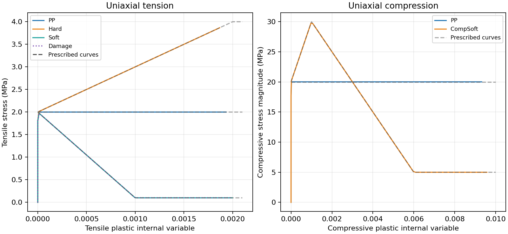
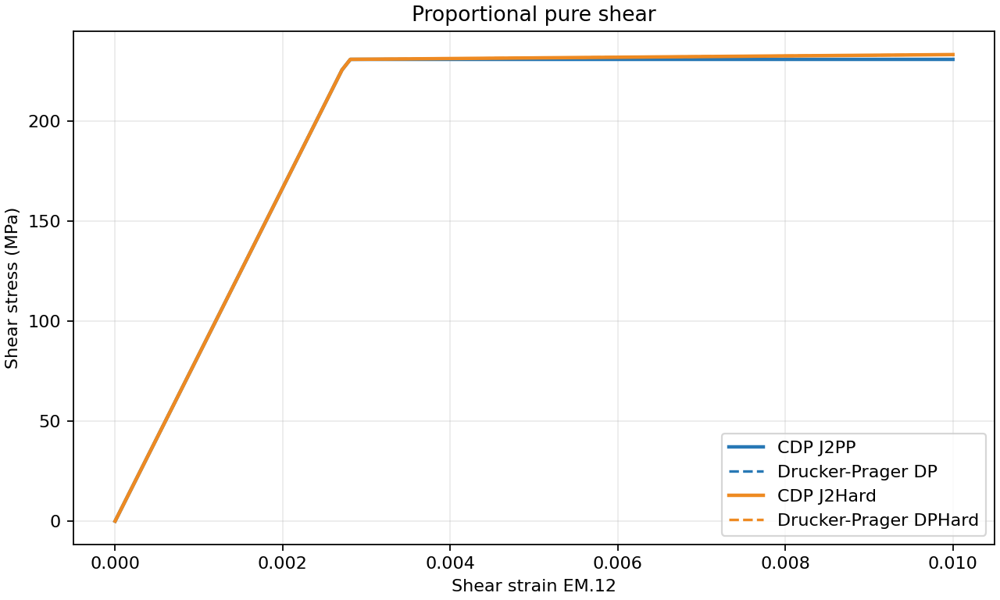
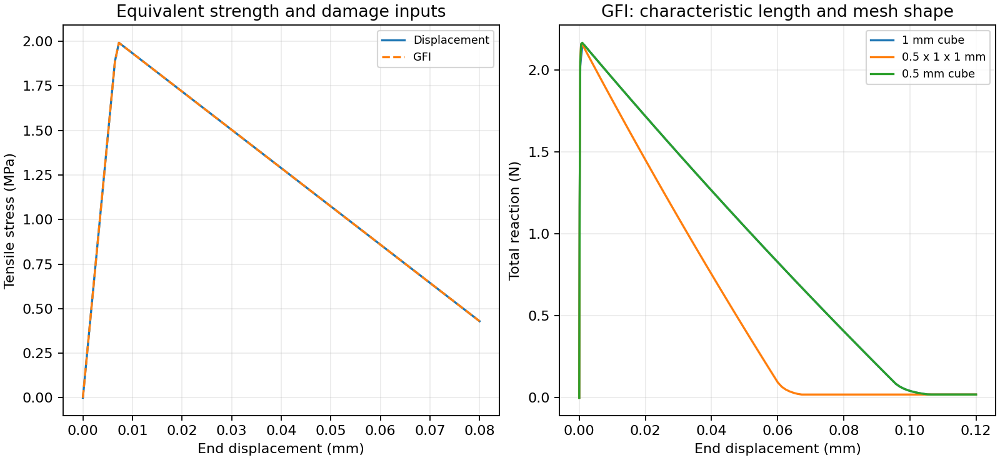
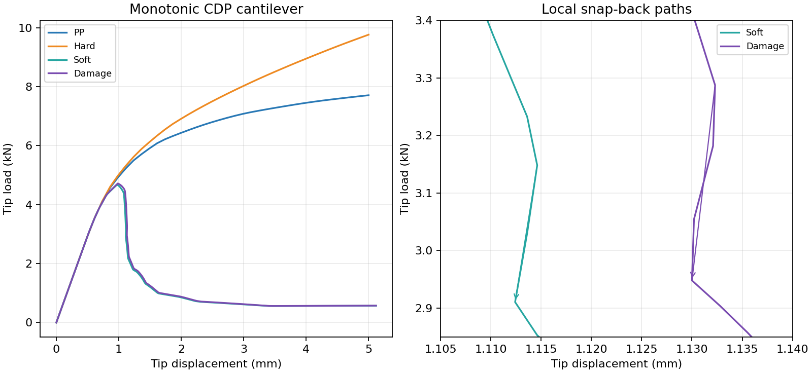
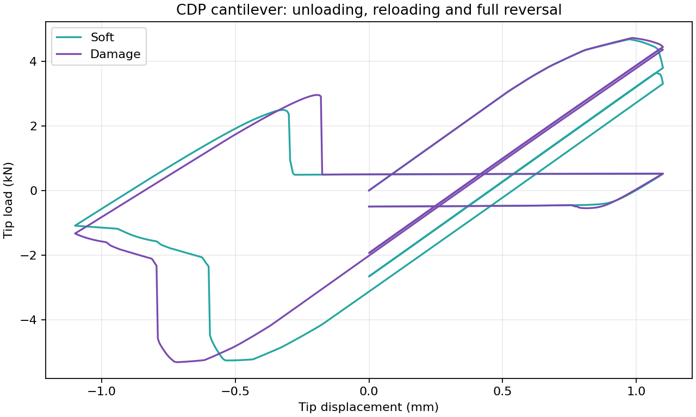

V.19 Concrete Damage Plasticity
단일 C3D8의 인장·압축·전단 응답을 지정 재료곡선 및 대응 재료모델과 비교하고, 개구변위·파괴에너지 입력의 동등성과 특성길이의 영향을 확인한다. 단위는 N, mm, MPa이다. 실험 비교는 C.1 무근 노치 보, C.2 RC 보 모델 비교, C.3 Earij U2에서 다룬다.
V.19.1 일축 인장·압축
100×100×100 mm 정육면체 C3D8 하나의 옆면을 자유롭게 두고 축방향 변위를 가한다. 탄성계수는 \(E=29188.63\) MPa, 포아송비는 \(\nu=0.18\)이다. 인장은 0.2 mm, 압축은 1 mm까지 재하한다. 재료곡선의 가로축은 인장·압축 소성 내부변수 \(\kappa_t\), \(\kappa_c\)이다.
Table V.19.1 Uniaxial Material Curve Checks
| 입력 | 지정 곡선과 비교 기준 | 최종 응력 |
|---|---|---|
tension-PP.inp |
인장강도 2 MPa의 완전소성 | 2.0000 MPa |
tension-Hard.inp |
\(\kappa_t=0.002\)까지 2→4 MPa 경화 | 3.8675 MPa |
tension-Soft.inp |
\(\kappa_t=0.001\)까지 2→0.1 MPa 연화 | 0.1000 MPa |
tension-Damage.inp |
같은 인장 연화에 \(d_t=0.6\)까지 손상 적용 | 0.1000 MPa |
compression-PP.inp |
압축강도 20 MPa의 완전소성 | −20.0000 MPa |
compression-CompSoft.inp |
\(\kappa_c=0.001\)에서 30 MPa, 0.006에서 5 MPa | −5.0000 MPa |
여섯 해석 모두 104증분으로 완료했다. 소성 구간의 응력은 지정 곡선과 0.002 MPa 이내로 일치하며, 자유 옆면의 수직응력은 0.001 MPa 미만이다.

Figure V.19.1 Uniaxial Tension and Compression against the Prescribed CurvesInput File
tension-PP.inptension-Hard.inptension-Soft.inptension-Damage.inpcompression-PP.inpcompression-CompSoft.inp
V.19.2 순수전단의 재료모델 비교
같은 크기의 C3D8에서 아랫면의 \(x\) 변위를 고정하고 윗면에 1 mm의 \(x\) 변위를 준다. 전체 절점의 \(y\), \(z\) 변위를 고정하여 비례 순수전단을 만든다. \(E=200000\) MPa, \(\nu=0.2\)를 사용한다.
CDP의 인장·압축 강도를 같게 두고 압력 의존성과 팽창을 제거한 조건을 대응 Drucker–Prager 모델과 비교한다. 완전소성 쌍은 초기 등가강도 400 MPa, 경화 쌍은 DP의 경화계수 1000 MPa에 대응한다. 이 비례 전단 경로의 CDP 내부변수와 DP 등가소성변형률의 관계는 \(\kappa_t=\kappa_c=\sqrt{3}\,\bar\varepsilon^p/4\)이다.
Table V.19.2 Equivalent Pure-Shear Results
| 비교 입력 | 최종 전단응력 | 두 모델의 전단응력 차이 |
|---|---|---|
shear-J2PP.inp · shear-DP.inp |
230.94 MPa | 출력 CSV에서 0 |
shear-J2Hard.inp · shear-DPHard.inp |
233.34 MPa | 출력 CSV에서 0 |
네 해석 모두 104증분으로 완료했다. 이 결과는 지정한 비례 순수전단 경로에서의 동등성을 확인한다.

Figure V.19.2 CDP and Drucker–Prager Responses in Proportional Pure ShearInput File
shear-J2PP.inpshear-DP.inpshear-J2Hard.inpshear-DPHard.inp
V.19.3 개구변위·파괴에너지 입력의 동등성
100 mm 정육면체에서 같은 인장 강도·손상 곡선을 Displacement와 GFI로 각각 지정한다. 초기 인장강도는 2 MPa, \(G_f=0.1\) N/mm이며, 선형 연화의 기준 개구변위는 \(w_f=2G_f/f_{t0}=0.1\) mm이다. 손상은 개구변위 0.1 mm에서 0.6이 되는 동일한 곡선으로 지정한다.
목표 변위 0.08 mm까지 두 해석 모두 104증분으로 완료했다. 최종 인장응력은 0.42942 MPa이고, 변위·반력·응력·내부변수의 CSV가 동일하다. 이 시험은 두 입력 방식의 동등성을 확인한다.
Input File
tension-Open.inptension-Energy.inp
V.19.4 특성길이와 망 형상
길이 3 mm, 단면 1×1 mm 막대의 중앙 한 요소층에 약한 CDP 재료를 적용하고 나머지는 같은 탄성계수의 탄성재료로 둔다. 오른쪽 끝을 0.12 mm까지 당긴다. 약한 층은 GFI, 2, 0.1을 사용한다. 전체 반력은 가력면의 절점 반력을 합한 값이고, 외력 일은 성공 증분의 반력–변위 곡선을 사다리꼴로 적분한다.
Table V.19.3 GFI Results for Three Mesh Shapes
| 입력 | 전체/약한 요소 수 | 약한 요소 크기 | 최대 반력 | 외력 일 |
|---|---|---|---|---|
bar-h1.inp |
3/1 | 1×1×1 mm | 2.15052 N | 0.10620 N·mm |
bar-h05.inp |
6/1 | 0.5×1×1 mm | 2.15664 N | 0.06780 N·mm |
bar-cube-h05.inp |
24/4 | 0.5×0.5×0.5 mm | 2.16437 N | 0.10624 N·mm |
현재 C3D8의 특성길이는 \(\ell=\sqrt[3]{V}\)이다. 정육면체 망을 1 mm에서 0.5 mm로 세분하면 외력 일의 차이는 약 0.035%다. 가력 방향만 세분한 망은 가력 방향의 요소 폭과 특성길이가 달라 응답 차이가 남는다.
외력 일에는 탄성에너지 변화와 GFI의 1% 잔류강도 구간도 포함되므로 입력 \(G_f\)와 같은 파괴에너지로 해석하지 않는다. 이 결과는 해당 일축 인장 시험의 망 형상 비교 범위로 해석한다.

Figure V.19.3 Equivalent Opening Inputs and GFI Response for Three Mesh ShapesInput File
bar-h1.inpbar-h05.inpbar-cube-h05.inp
V.19.5 외팔보 단조 재하
V.5의 C3D8 외팔보 형상을 사용한다. 길이 2000 mm, 높이 400 mm, 폭 100 mm이며, 망은 20×4×1이다. 왼쪽 면을 고정하고 오른쪽 면의 수직변위를 중앙 가력 절점에 RigidLink로 연결한다. 재료는 V.19.1의 PP·Hard·Soft·Damage를 사용한다.
PP·Hard는 끝단 변위를 5 mm까지 가한다. Soft·Damage는 끝단 기준하중 30 kN의 arc-length 해석으로 최대하중 이후 연화 경로를 추적한다. 아래 곡선은 성공 증분의 순서대로 표시한다.
Table V.19.4 Monotonic CDP Cantilever Results
| 입력 | 비교 항목 | 최종 끝단 변위 | 최대하중 |
|---|---|---|---|
cant-PP.inp |
콘크리트 완전소성 | 5.0000 mm | 7.7080 kN |
cant-Hard.inp |
인장 경화 | 5.0000 mm | 9.7624 kN |
cant-Soft-arc.inp |
손상 없는 인장 연화 | 5.1199 mm | 4.6762 kN |
cant-Damage-arc.inp |
인장 연화와 손상 | 5.1188 mm | 4.7167 kN |
네 입력 모두 완료했다. Soft·Damage는 각각 1200증분이며, 하중 하강 구간에서 끝단 변위가 잠깐 역행하는 snap-back이 있다. 등록한 입력의 CSV에서 Soft는 1.1146→1.1124 mm, Damage는 1.1323→1.1300 mm의 구간을 확인했다. 해석법의 설명은 TM-03에서 다룬다.
이 시험은 같은 구조에서 CDP 재료별 응답과 연화 평형경로를 비교한다.

Figure V.19.4 Monotonic CDP Cantilever Responses and Local Snap-Back PathsInput File
cant-PP.inpcant-Hard.inpcant-Soft-arc.inpcant-Damage-arc.inp
V.19.6 외팔보 반복 재하
같은 외팔보의 Soft·Damage 모델에 \(0\rightarrow+1.10\rightarrow0\rightarrow+1.10\rightarrow-1.10\rightarrow+1.10\rightarrow0\) mm의 끝단 변위를 가한다. 전체 시간은 8.8 s, 균일 시간증분은 0.005 s이며, 각 재하 구간의 변위 변화량도 증분당 0.005 mm이다.
두 입력 모두 1760증분으로 완료했고 최종 끝단 변위는 0이다. 하중–변위 곡선에서 제하·재재하·큰 반전과 손상 유무에 따른 강성·잔류응답을 비교한다. 동일한 인장 연화곡선을 사용하므로 재료모델 차이를 비교할 수 있다.

Figure V.19.5 Unloading, Reloading and Full Reversal of the CDP CantileverInput File
cant-Soft-cyclic.inpcant-Damage-cyclic.inp
입력과 실행
입력 21개와 공통 재료 파일은 Examples/V.19 Concrete Damage Plasticity/ 바로 아래에 있다. 일축·전단·입력 동등성·외팔보 시험은 materials.inp, 막대 시험은 gfi-materials.inp를 포함한다. 기준 CSV는 다른 Verification 예제와 같이 Result/에 보관한다. 위 입력 목록은 verification.def의 V.19 등록 목록과 같다.
hfAnalyzer가 실행 경로에 설정된 명령창에서 V.19 폴더로 이동하여 입력 하나 또는 전체를 실행한다.
hfAnalyzer tension-Open.inp
run.bat
실행 결과는 입력 옆에 생성되므로 Result/의 기준 CSV를 덮어쓰지 않는다. 저장소 루트의 python verify.py verification.def는 등록된 Verification 전체를 실행하고 각 결과를 기준 파일과 비교한다.